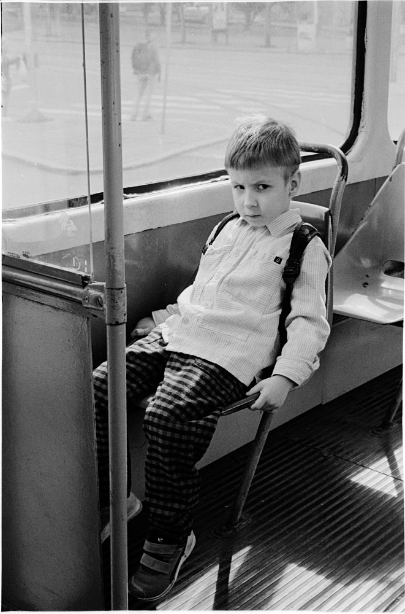
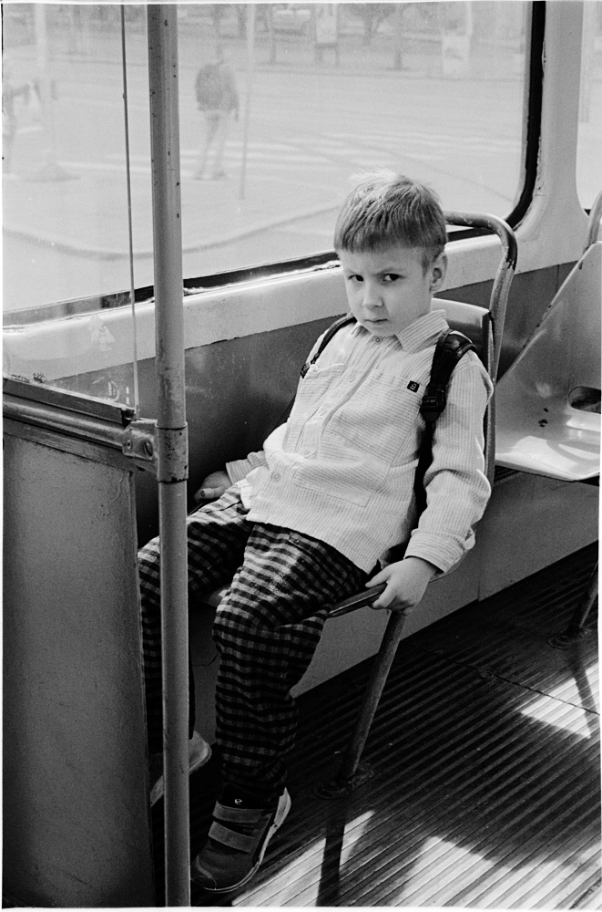
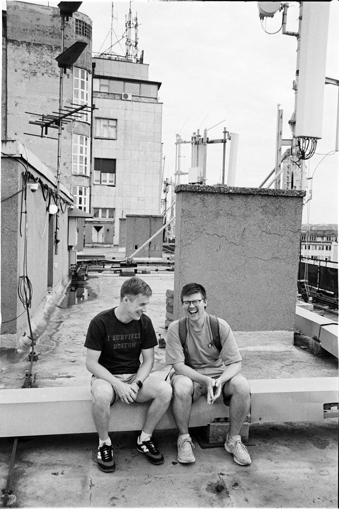
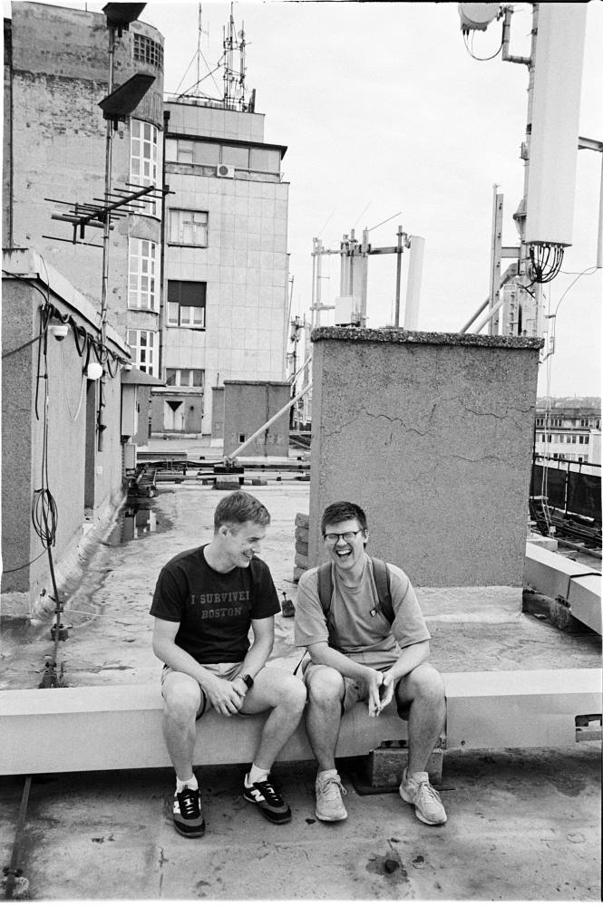
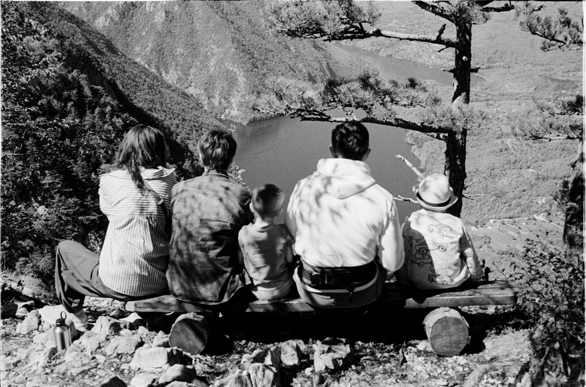
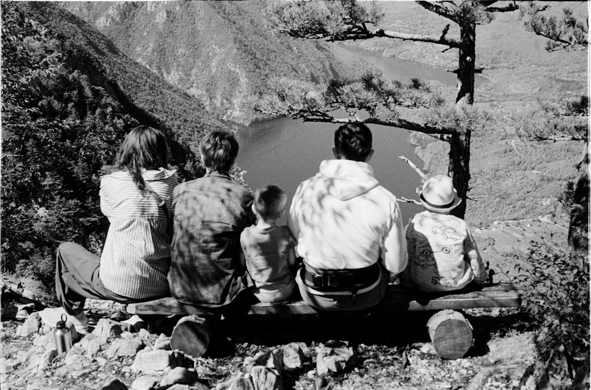
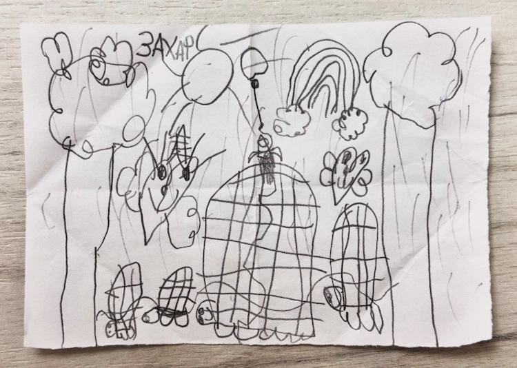
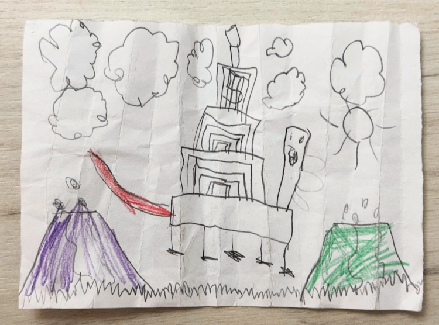

600x
Подробнее про "Евклид".
Подробнее про "Евклид".

Ох, какой классный релиз!

 



 



 

Я ходил на этих ребят лет 10 назад. Помню, что было это в каком-то маленьком клубе на улице Ломоносова, недалеко от Гостинки. В какой-то момент в клубе полностью вырубилось электричество, мгновенно стало тихо, и только Руслан продолжал еще какое-то время ебашить...
Классно, что они все еще иногда выступают вместе.
Цитата отсюда:
Заключение о смерти Алексея Навального, полученное его супругой от Следственного комитета, либо свидетельствует о том, что причину смерти не нашли, либо это попытка скрыть, что произошло на самом деле. Так считает бывший врач Навального Александр Полупан. На просьбу «Агентства» одним словом охарактеризовать текст СК, медик сказал:
Пиздеж.
Захар рисует в садике на каких-то кусочках бумаги, которые потом складывает по многу раз, крутые картинки.
На одних идет дождь, светит радуга, ползают черепахи (самая большая — это сам Захар), есть мама и папа, а так же ракета (ищите):

На других люди летают по трубам (нет, Футураму он не смотрел) внутри трамвая, который перевозит подводную лодку:

На третьих извергаются вулканы и ходят прямоугольные пятиноги:

И так каждый день.
Обсуждали тут с одним знакомым произошедшее:
– Я, говорит он, не понимаю: зачем им (американцам и немцам) наши политзеки?!
Хороший ведь вопрос, есть над чем подумать.
А вот и еще хорошие вопросы:
Или даже:

С большим удовольствием смотрим с мелким очень классный мульт-сериал про детей, родителей и их отношения. И вам рекомендуем)